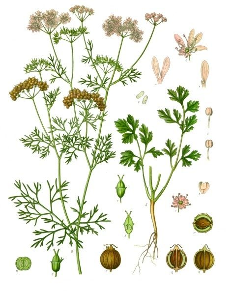

धनियाCoriander
Coriandrum sativum · Apiaceae · FLR-0099

- Scientific name
- Coriandrum sativum L.
- Family
- Apiaceae
- Hindi
- धनिया
- Status here
- cultivated
- IUCN
- not evaluated
When to look कब देखें
Expected mainly in October, November, December, January, February, March, April.
धनिया / Coriander
Coriandrum sativum L. — Apiaceae
धनिया (हरा धनिया / खड़ा धनिया / धनिया दाना) — पूर्वी उत्तर प्रदेश के खेतों और घरेलू बगीचों में शरद ऋतु (Rabi season) में उगाई जाने वाली एक अत्यंत महत्वपूर्ण, सुगंधित वार्षिक शाकीय मसाला व औषधि फसल (aromatic annual herb) है। यह एटलस में शामिल होने वाला पहला सुगंधित वार्षिक शाकीय पौधा (first aromatic annual herb) है। यह मूल रूप से भूमध्यसागरीय क्षेत्र और पश्चिमी एशिया का निवासी है, लेकिन भारत में इसकी खेती वैदिक काल से की जा रही है। इसकी सबसे बड़ी जैविक पहचान इसके पत्तों का द्विरूपी होना (dimorphic leaves) है — निचले पत्ते चौड़े व कटीले होते हैं, जबकि ऊपरी शाखाओं वाले पत्ते धागे की तरह बारीक कटे हुए होते हैं। वसंत ऋतु में इस पर छोटे सफ़ेद या हल्के गुलाबी फूलों के छतरी जैसे गुच्छे (flat-topped umbels) खिलते हैं, जिनमें गोल, खुशबूदार फल (धनिया दाना) लगते हैं। धनिया के बीजों और काँस घास (Kans Grass, FLR-0082) दोनों का उल्लेख प्राचीन वैदिक ग्रंथों (जैसे ऋग्वेद और यजुर्वेद) में धार्मिक व औषधीय संदर्भों में मिलता है। पूर्वी उत्तर प्रदेश के व्यंजनों में इसके ताजे पत्तों का उपयोग सब्जी को सजाने व हरी चटनी बनाने के लिए, और इसके सूखे बीजों के पाउडर का उपयोग मसाले के रूप में दैनिक स्तर पर किया जाता है।
Quick Identification त्वरित पहचान
| Feature | Description |
|---|---|
| Plant habit | Erect, smooth, branching, highly aromatic annual herb growing up to 30–60 cm high |
| Dimorphic leaves | Lower leaves are broad, fan-shaped with lobed margins; upper leaves are finely dissected into narrow, thread-like segments |
| Flowers | Small (2–3 mm), white or pale pink, arranged in flat-topped, umbrella-like clusters (compound umbels) |
| Fruit | A small, globose, dry ribbed schizocarp (3–5 mm diameter), splitting into two half-fruits when fully dry |
| Aromatic scent | Every part of the plant, especially when crushed, releases a fresh, citrusy, sweet spice scent |
Field tip: Look in vegetable patches during December. Look for low patches of bright green, deeply lobed leaves. Pinch a leaf; it will release a strong, fresh citrusy herbal smell. In late winter, look for flat white flower umbrellas with thin feathery leaves underneath.
Morphology आकारिकी
Biometrics (typical measurements of mature plants in the northern Indian plains):
| Measurement | Range |
|---|---|
| Plant height | 30–60 cm |
| Lower leaf length | 5.0–10.0 cm |
| Flower umbel width | 3.0–6.0 cm |
| Flower diameter | 2–3 mm |
| Fruit diameter | 3–5 mm |
| Seed weight (1000 seeds) | 5.0–8.0 g |
Stem and Branches: Stems are erect, round, hollow, smooth, light green, turning straw-colored at maturity.
Foliage: Alternately arranged, divided leaves. Lower leaves have broad segment lobes, while upper leaves show highly reduced thread-like segments to conserve water during dry flowering months.
Flowers: Small, bisexual, outer flowers of the umbel have larger, asymmetrical petals to attract insects.
Fruit and Seeds: The round dry fruits are heavily ribbed, containing essential oils (linalool) that give them a sweet spice aroma.
Cultivation Calendar कृषि कैलेंडर
- Sowing: Seeds ( schizocarps crushed gently into two halves) are sown in October–November in flat, well-prepared beds.
- Leaf Harvesting: Fresh green leaves (hara dhaniya) are harvested by cutting shoots from December to February.
- Seed Harvesting: Left uncut, the plants produce flowers in late January and mature round fruits by March–April. The crop is harvested when fruits turn golden-brown, dried in shade, and threshed.
Associated Species / Interactions संबंधित प्रजातियाँ
- Cultural Vedic Connection: Mentioned in ancient Vedic texts alongside Kans Grass (Saccharum spontaneum), reflecting their historical integration in early Indian farming and domestic rituals.
- Pollinators: Flat umbels are highly attractive to hoverflies, honeybees, ladybird beetles, and parasitic wasps which feed on the shallow nectar cups.
Pests and Diseases कीट और रोग
- Powdery Mildew: A fungal disease causing white powdery dust on leaves and stems during winter morning fogs, destroying seed yield.
- Coriander Aphids: Tiny green bugs that cluster on young flower stems, sucking sap and stunting growth.
Traditional and Ethnobotanical Use पारंपरिक और नृवंशवनस्पति उपयोग
- Digestive Seed Decoction: Dried coriander seeds are boiled in water to prepare a tea (dhaniya ka pani), drunk in the morning to relieve bloating, acidity, and flatulence.
- Headache Leaf Paste: Fresh green leaves are ground with water into a cold paste, applied topically over the forehead to relieve throbbing headaches caused by heat exposure.
- Traditional Dhaniya Chutney: Fresh leaves are ground with green chillies, garlic, salt, and raw mango pulp to make a sharp green chutney consumed daily with meals.
- Conjunctivitis Wash: A cold infusion of coriander seeds is filtered through clean cotton and used to wash red, burning eyes to reduce irritation.
Expected Locally स्थानीय रूप से अपेक्षित
Not a field record. Written from published accounts for eastern Uttar Pradesh. No confirmed local sighting yet — if you have seen it, that is what the atlas needs.
अभी तक स्थानीय पुष्टि नहीं। यह विवरण प्रकाशित स्रोतों से है, किसी अवलोकन से नहीं।
A beloved kitchen garden herb grown by every family in the Basti district, regularly observed in the Harraiya, Vikramjot, and Basti blocks. Villagers state that they always crush coriander seeds into two halves (dhaniya dalna) before sowing, which ensures faster germination. The smell of fresh dhaniya chutney in village kitchens is a defining winter sensory experience.
Distribution वितरण
Global range: Native to the Mediterranean basin and Southern Europe; cultivated globally as a major annual spice and herb crop.
In India: Widespread across all states; Rajasthan, Madhya Pradesh, and Gujarat are the major seed producers.
In Uttar Pradesh: Abundant state-wide in all winter vegetable farming areas.
In Basti district / eastern UP: Widespread in winter home gardens.
Research Questions शोध प्रश्न
Anyone can investigate these | कोई भी इन प्रश्नों की जाँच कर सकता है
- How many days does a Coriander seed take to germinate when sown as a whole round fruit compared to when crushed into two halves? — Conduct seed trial comparisons.
- Does the intensity of leaf aroma decrease in plants grown under deep shade compared to full winter sun in Basti? — Evaluate smell strength.
- What is the number of ladybird beetles observed on a 1-meter plot of flowering Coriander compared to a wheat plot? — Monitor predatory insect counts.
- How many weeks can fresh Coriander leaves be preserved in a dry clay pot versus a plastic bag? — Track storage life.
- Does drinking a coriander seed decoction daily reduce the incidence of bloating in family members in your village? / क्या रोजाना धनिये के बीज का काढ़ा पीने से आपके गाँव के लोगों में पेट फूलने (Bloating) की समस्या कम हो जाती है? — Document traditional remedy outcomes.
Similar Species मिलती-जुलती प्रजातियाँ
| Species | How to tell apart | comparison |
|---|---|---|
| Fennel (Foeniculum vulgare) | Much taller; leaves are all thread-like (no broad lower leaves); flowers are yellow; seeds are oval | सौंफ — पीले फूल, बारीक धागे जैसे पत्ते |
| Cumin (Cuminum cyminum) | Smaller plant; leaves are highly reduced, thread-like; flowers are small pink-white umbels; seeds are elongated | जीरा — बारीक पौधे, नुकीले छोटे सुगंधित बीज |
| Wild Carrot (Daucus carota) | Leaves are feathery and hairy; flower umbel has a dark red central flower; roots are thick | जंगली गाजर — रोएँदार पत्तियाँ, बीच में लाल फूल |
Field rule: Erect winter annual herb with dimorphic leaves (broad lower, thread-like upper), sweet citrus-spice scent, and flat compound umbels of white-pink flowers producing round ribbed dry seeds, is Coriander (Dhaniya).
Taxonomy & Classification वर्गीकरण
Original description. Carl Linnaeus described Coriander as Coriandrum sativum in 1753 in his Species Plantarum (Vol. 1, p. 256). The type locality was listed as Europe (in agricultural fields). The genus name Coriandrum is derived from the Greek koris, meaning bug, referencing the bug-like smell of the unripe green fruits. The specific name sativum is Latin for cultivated.
Subspecies. Monotypic — no subspecies are currently recognised.
Family and order placement. Placed in the order Apiales, family Apiaceae (carrot or parsley family), subfamily Apioideae, tribe Coriandreae.
Phylogenetic notes. Coriandrum sativum is a distinct Old World lineage within Apiaceae, characterized by dimorphic leaf plasticity and round schizocarps containing high quantities of the monoterpenoid linalool.
IUCN status rationale. Not evaluated (NE) by the IUCN Red List. It has a highly secure, abundant global agricultural population.
Photo Gallery फोटो गैलरी
References संदर्भ
- Linnaeus, C. (1753). Species Plantarum. Laurentii Salvii, Holmiae, Vol. 1, p. 256. [original description]
- Brandis, D. (1906). Indian Trees (covers Apiaceae family keys). Archibald Constable & Co., London.
- Kirtikar, K. R. & Basu, B. D. (1935). Indian Medicinal Plants. Vol. II. Lalit Mohan Basu, Allahabad.
- Diederichsen, A. (1996). Coriander (Coriandrum sativum L.). Promoting the conservation and use of underutilized and neglected crops. IPGRI, Rome (the definitive biological monograph).
- World Flora Online (2024). Coriandrum sativum taxon details.
- GBIF Occurrence Data — Coriandrum sativum, India (2010–2025).
Source file: species/flora/crops/coriander.md